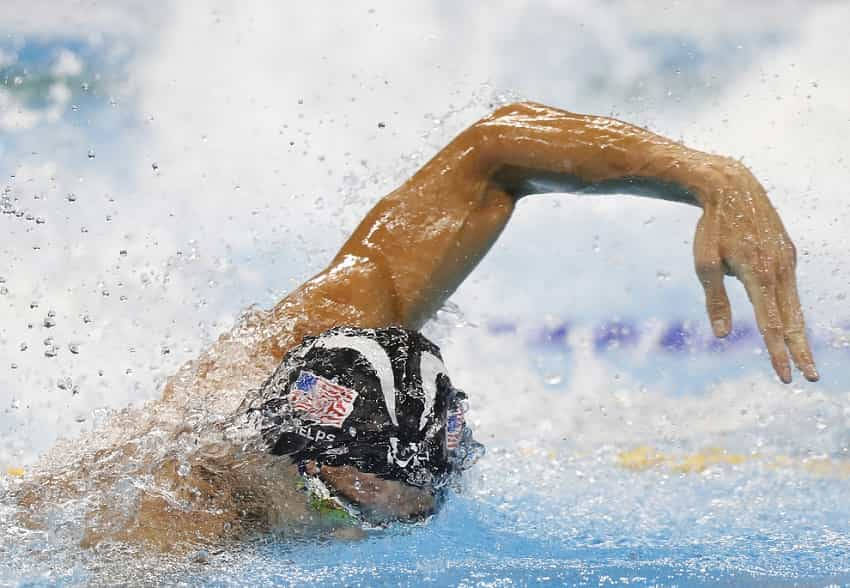
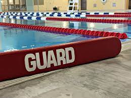
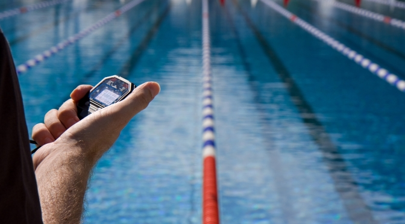

Hobbies
Swimming

The main reason that swimming is one of my favorite hobbies is because I've been doing it for so long; I started doing competitive swimming at the age of 6 and have loved it ever since. I'm at the age of 21 now and continue doing it to this day.
Chess

Although I only played a little at a very young age, at around the age of 18, I really started to pick up and enjoy the game of chess. I've always had a particular interest with strategy games, which makes a game like chess perfect for me since there are almost endless amounts of combinations that can occur in this game.
Reading

Although I would consider this the least favorite of my hobbies, it's something that I still enjoy doing from time to time. Some of my favorite authors include Stephen King and Cormac McCarthy.
Experience
Lifeguarding

I started lifeguarding during my second year of highschool. Although it can be really boring at times, especially when there's no patrons at the pool or beach, it's still nice to be able to work a job that is, for the most part, easy to do and is directly related to my swimming background.
Swim Coaching

Yet another job that is related to my swimming background, swim coaching is something that I recently picked up and have enjoyed over the past 4 years. I'm currently one of the youngest coaches for the team I work with, and I hope to continue with it hopefully the rest of my life to make a career out of it along with software development.
Retail Work
This is, by far, the least favorite out of all the jobs that I've held. There's not a single memory of working retail that I have where I remember genuinely enjoying going to work doing it over the summer. A lot of it had to do with dealing with unprofessional co-workers and mean or aggressive customers, so I'm definitely glad that I'm at a point in my life where I don't think I'll ever have to go back.
Contact Form